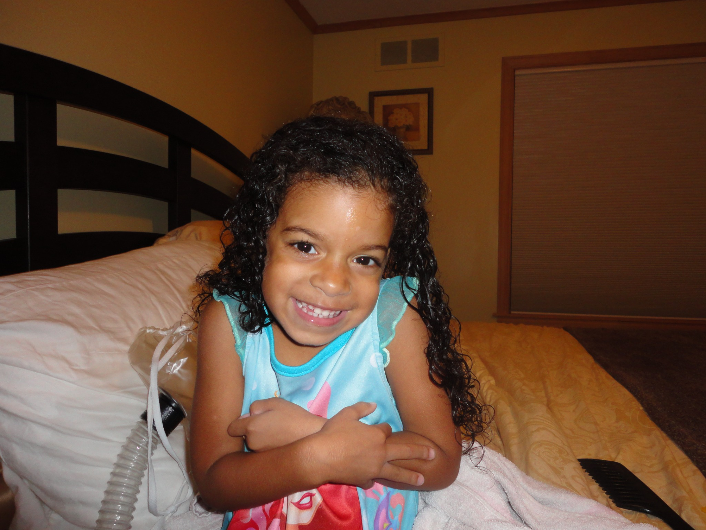

Morgan Duff

Personal Builds
Morgan’s Build 1, 3, 4, and 5 files were not included in the materials provided for this site.
Personal Journal
No journal entries posted yet.

Morgan’s Build 1, 3, 4, and 5 files were not included in the materials provided for this site.
No journal entries posted yet.